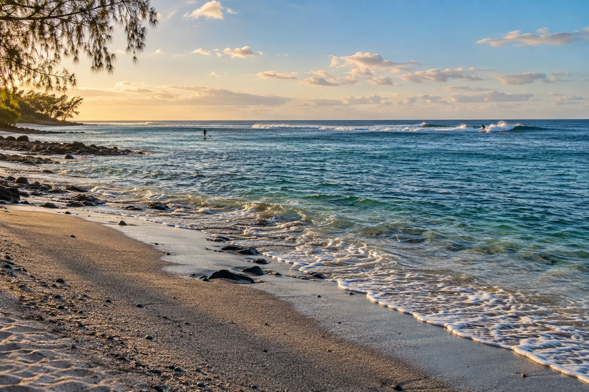

Tamarin
Rivière Noire, Maurice · surf, paddle

Baie de la côte ouest de Maurice, avec une gauche de récif et des dauphins en matinée. Le coucher de soleil y est célèbre.
- Lieu
- Rivière Noire, Maurice
- Niveau
- Intermédiaire
- Activités
- surf, paddle
- Type d'eau
- Mer / océan
- Coordonnées
- -20.32, 57.37 (position approximative du secteur)
Dangers à connaître
- Récif peu profond.
- Faune protégée.
Le conseil d'Ocean Buddy
Observe les dauphins sans les approcher et sans les poursuivre en kayak.
Ouvrir dans Ocean Buddy Télécharger sur l'App Store
Source : Fiche Ocean Buddy · septembre 2026 · à vérifier localement.